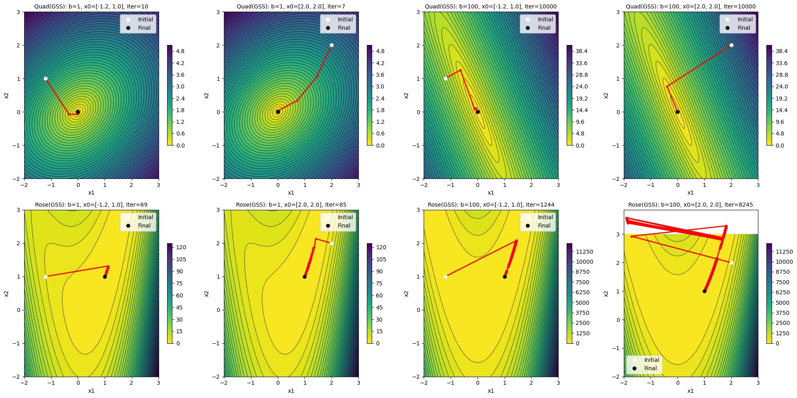
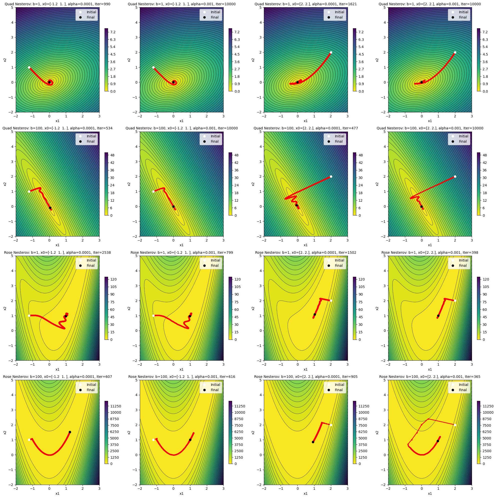
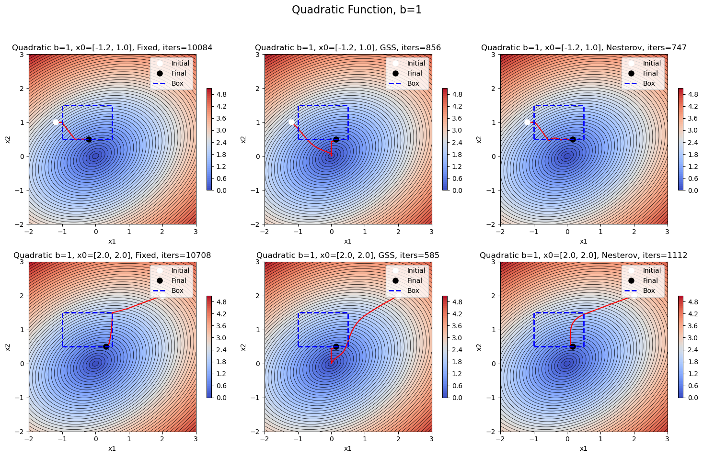
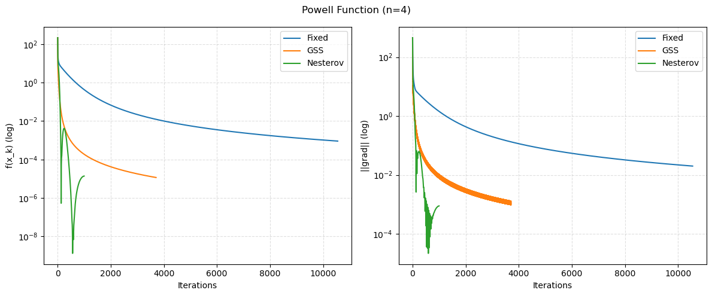

Every time you train a neural network, you are navigating a landscape. Not a physical one, but a mathematical surface where the height represents how wrong your model is. The goal is to find the lowest point. The tool is gradient descent. But here is what I discovered: the path you take matters just as much as the destination.
The Paper: Emiola & Adem (2021)
My assignment drew heavily on the work of Iyanuoluwa Emiola and Robson Adem from the University at Buffalo, whose 2021 paper Comparison of Minimization Methods for Rosenbrock Functions provides a systematic review of iterative optimization methods.
Emiola and Adem compare three core algorithms: the Steepest Gradient Descent Method, the Newton-Raphson Method, and the Fletcher-Reeves Conjugate Gradient Method. What makes their study particularly useful is their treatment of step-size selection. They test four approaches: fixed step-size, variable step-size, quadratic-fit, and Golden Section Search.
The paper uses the Rosenbrock function as a benchmark. This is a standard test problem in optimization research, known for its curved, narrow valley that exposes the weaknesses of naive gradient methods. Emiola and Adem's numerical experiments show clearly how different combinations of algorithm and step-size strategy perform on well-conditioned versus ill-conditioned variants of this function.
Key finding from Emiola & Adem: A fixed step-size performs poorly when the Hessian is badly scaled or the valley is sharply curved. Line search methods like Golden Section Search significantly improve convergence, but cannot fully overcome the inherent difficulties of ill-conditioned landscapes.
My Assignment: Implementing and Extending
For my coursework in Numerical Algorithms and Optimization (part of the MSc in Predictive Modelling and Scientific Computing at Warwick), I was asked to implement and compare three gradient descent variants on two benchmark functions.
The three methods I implemented were:
- Fixed step-size gradient descent - the simplest approach, using a constant learning rate α
- Golden Section Search (GSS) - at each step, perform a line search to find the optimal step-size
- Nesterov's accelerated gradient - add momentum to look ahead before stepping
The test functions were:
Rotated Quadratic: A simple bowl shape, but rotation and stretching (controlled by parameter b) cause the gradient to point in unhelpful directions.
Rosenbrock Function: The "banana function" with its curved valley. The global minimum sits at the bottom of a long, narrow ravine. Finding the valley is easy; walking along it to the minimum is painfully slow.
Results and Observations
I ran each method from different starting points, with both well-conditioned (b=1) and ill-conditioned (b=100) settings. The visualizations tell the story.

The Zig-Zag Problem
When the problem is well-conditioned (b=1), fixed-step gradient descent works fine. The path curves smoothly toward the minimum. But with b=100, you see the classic failure mode: the algorithm bounces back and forth across a narrow valley, making tiny progress along the actual direction it needs to go.
This is the condition number problem. When one direction is much steeper than another, the gradient points mostly toward the steep walls rather than along the valley floor. It is like trying to walk downhill in a narrow canyon but constantly bumping into the sides.

Line Search: Better, But Not Perfect
Golden Section Search improved things significantly. By choosing the step-size optimally at each iteration, the algorithm converged in 7-10 iterations on easy problems versus 10,000+ for fixed step-size. But on Rosenbrock with b=100, it still struggled. The valley is just that curved.
This matches Emiola and Adem's observation that line search methods mitigate sensitivity to curvature but cannot eliminate it entirely.

Momentum: Speed vs Stability
Nesterov's method adds a look-ahead momentum term. Instead of just following the current gradient, it anticipates where you will be after the step and corrects accordingly. On the Rosenbrock function, this helped the optimizer slide along the valley floor much faster.
But there is a trade-off. On highly ill-conditioned problems, the momentum can cause overshooting and oscillation. The plots show the characteristic U-shaped bouncing: the algorithm speeds up, overshoots, corrects, overshoots again.
Extensions: Constraints and Higher Dimensions
The assignment also required handling box constraints and testing on higher-dimensional problems.
For constraints, I used a penalty method: add a term to the objective function that penalizes being outside the feasible region. Start with a small penalty, solve, then increase the penalty and solve again. This connects to the trust-region literature discussed by Conn, Gould & Toint (1988).

For higher dimensions, I tested on the Powell function (n=4). The same patterns held: Nesterov converged fastest, GSS was most accurate, fixed step-size was reliable but slow.

Connecting Theory to Practice
| Concept from Assignment | What It Means for ML |
|---|---|
| Ill-conditioning (high b) | Why some neural networks train slowly: the loss landscape has narrow valleys |
| Fixed step-size zig-zagging | Why learning rate tuning matters so much |
| Line search adaptation | Why adaptive optimizers (Adam, RMSprop) often outperform vanilla SGD |
| Momentum overshooting | Why momentum hyperparameters need tuning, especially near convergence |
| Penalty methods | Foundation for regularization (L1/L2) and constrained optimization in ML |
Key Takeaway
Modern optimizers like Adam combine adaptive learning rates (like line search) with momentum (like Nesterov) precisely because neither alone handles all the pathologies of real loss landscapes. Understanding why these methods exist changed how I think about hyperparameter tuning.
The Numbers
Final results across methods (iterations to converge on Rosenbrock, b=100):
- Fixed step-size (α=0.001): ~9,000 iterations
- Golden Section Search: ~1,200 iterations
- Nesterov (α=0.001): ~600 iterations
That is a 15x speedup from fixed step-size to Nesterov on the same problem. In ML terms, that is the difference between a training run that finishes overnight and one that takes two weeks.
What I Would Explore Next
Looking back, I would investigate:
- Adaptive momentum - reducing momentum as you approach the minimum to avoid oscillation
- Second-order methods - using curvature information (Hessian) to pick better directions, as Emiola & Adem do with Newton-Raphson
- Stochastic variants - how these methods change when you only see noisy gradient estimates
But for a first deep dive into optimization, this assignment gave me something textbooks could not: intuition. I have seen the zig-zags. I have watched momentum overshoot. Now when I tune a learning rate or pick an optimizer, I have a mental model of what is actually happening.
And that is the point, is it not? Not just to get the right answer, but to understand why.
References
Emiola, I. & Adem, R. (2021). Comparison of Minimization Methods for Rosenbrock Functions. arXiv:2101.10546. https://arxiv.org/abs/2101.10546
Conn, A.R., Gould, N.I.M. & Toint, P.L. (1988). Trust-Region Methods. SIAM.
Nesterov, Y. (1983). A method for unconstrained convex minimization problem with the rate of convergence O(1/k²). Doklady AN USSR, 269, 543-547.